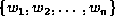
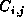

Data Structures and Algorithms
with Object-Oriented Design Patterns in Java
Data Structures and Algorithms
with Object-Oriented Design Patterns in JavaConsider the problem of typesetting a paragraph of justified text. A paragraph can be viewed as a sequence of n>0 words, . The objective is to determine how to break the sequence into individual lines of text of the appropriate size. Each word is separated from the next by some amount of space. By stretching or compressing the space between the words, the left and right ends of consecutive lines of text are made to line up. A paragraph looks best when the amount of stretching or compressing is minimized.
We can formulate the problem as follows:
Assume that we are given the lengths of the words, ,
and that the desired length of a line is D.
Let represent the sequence of words
from  to (inclusive).
That is,
to (inclusive).
That is,
for .
Let  be the sum of the lengths of the words in the sequence .
That is,
be the sum of the lengths of the words in the sequence .
That is,
The natural length,
for the sequence is the sum of the lengths of the words,  plus the normal amount of space between those words.
Let s be the normal size of the space between two words.
Then the natural length of is .
Note, we can also define
plus the normal amount of space between those words.
Let s be the normal size of the space between two words.
Then the natural length of is .
Note, we can also define  recursively as follows:
recursively as follows:
In general,
when we typeset the sequence all on a single line,
we need to stretch or compress the spaces between the words so
that the length of the line is the desired length D.
Therefore, the amount of stretching or compressing is given by
the difference .
However, if the sum of the lengths of the words,  ,
is longer than the desired line length D,
it is not possible to typeset the sequence on a single line.
,
is longer than the desired line length D,
it is not possible to typeset the sequence on a single line.
Let  be the penalty associated with typesetting
the sequence
be the penalty associated with typesetting
the sequence  on a single line.
Then,
on a single line.
Then,
This definition is of penalty is consistent with the stated objectives: The penalty increases as the difference between the natural length of the sequence and the desired length increases and the infinite penalty disallows lines that are too long.
Finally, we define the quantity  for as the minimum total penalty required to typeset the sequence . In this case, the text may be all on one line or it may be split over more than one line. The quantity is given by
We obtain Equation  as follows:
When i=j there is only one word in the paragraph.
The minimum total penalty associated with typesetting the paragraph
in this case is just the penalty which results from putting
the one word on a single line.
as follows:
When i=j there is only one word in the paragraph.
The minimum total penalty associated with typesetting the paragraph
in this case is just the penalty which results from putting
the one word on a single line.
In the general case, there is more than one word in the sequence . In order to determine the optimal way in which to typeset the paragraph we consider the cost of putting the first k words of the sequence on the first line of the paragraph, , plus the minimum total cost associated with typesetting the rest of the paragraph . The value of k which minimizes the total cost also specifies where the line break should occur.
 Copyright © 1998 by Bruno R. Preiss, P.Eng. All rights reserved.
Copyright © 1998 by Bruno R. Preiss, P.Eng. All rights reserved.